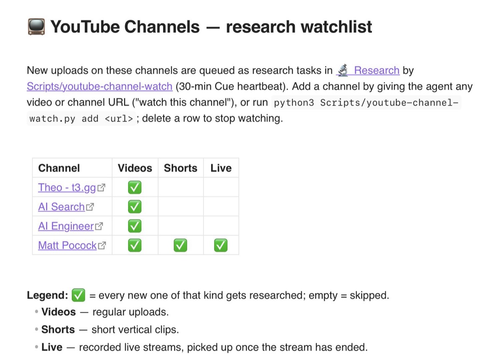

On the Shoulders of Giants
This morning I built a YouTube watcher. It will never watch a single video.
It watches channels. When one of them posts something new, it hands the video to my researcher and goes back to staring at the channel page. It's not a viewer. It's a manager.
The researcher who needed hearing aids
My notes have had a researcher living in them since April. I drop a question into a list, a small program notices, an AI goes off and reads real sources, writes up what it found, and pings me on my phone when it's done. I built the part that lets me feed it by voice from my bike, and wrote about it. In July that whole setup became a starter kit I could give to a friend.
A lot of what I want researched is a video. A talk, a news roundup, a developer explaining a new tool. And the researcher couldn't hear. Hand an AI a YouTube link and it gets the page around the video: the title, the comments, the recommended clips. Not a word of what anyone said.
That didn't stop it. It took the title, typed it into a web search and set off on its own journey from there. The write-up came back confident and cited, and it was about whatever the search had turned up, not about the video.
So in June I got it a hearing aid. For videos with captions, a small free tool, youtube-transcript-api, downloads them as plain text. Now a video in the list turns into a transcript file, and the researcher reads the talk the way it reads an article. The first one I tried it on properly was a Matt Pocock video, which turned into a post of its own.
Opinionated researchers
For a while I let the newer Claude models, Sonnet 5 and Opus 5, do the research, and they turned out to have opinions.
In July I queued a link to an article, and that was my whole request: a link with two words at the end, "model-inversion". The task the AI wrote from it assumed a security attack, because that's what the term usually means. The article was about letting one AI review another AI's code. The write-up opened with "Topic mismatch found." and spent its first paragraph explaining what my task had gotten wrong.
My request wasn't wrong. It was just a link. The researcher read the article fine, and then lectured me about a task I never wrote.
In August the researcher refused to keep its notes.
I'd queued a short conference talk from a channel called AI Engineer. The research came back fine, with a summary, the key points and a verdict. But the transcript file was missing. In its place was a note. The researcher, Sonnet 5 at the time, had decided that storing the talk word for word "would mean storing a large chunk of someone else's copyrighted talk", so it had paraphrased instead.
Moments like these are why I switched the researcher back to Sonnet 4.6, the model it had run on before. Now the newest ones, Opus 5.5 and Sonnet 5.5, are getting another shot.
"It's an archive"
Sonnet had finished the research but hadn't saved the transcript. I opened a session with a bigger model, Opus 5, and complained: "So I did research, but refused to store the transcript. Can you download the transcript and put it there? I have no idea what that is."
Opus fetched it in a minute. I added the part that mattered to me: "technically, it's correct. but it's an archive. of it at a time of research. I'm not reusing it or distributing it."
That's what the transcript is for. The write-up points at moments in the talk. If the video is edited or taken down later, the archive is how I check what was actually said.
Then I asked for one more thing. Some AI providers now mark the text their models write, slightly changing the word choice so it can be recognised later. A transcript the AI reads and then types back out may not match the original anymore, and I couldn't tell by looking. So the transcript isn't retyped anymore. A script downloads it straight into the file, and the AI only reads it afterwards. That rule went into the researcher's instructions the same evening.
I want them all
This morning I dictated one sentence to my AI: I want to give it a video, have it set up a watcher for that channel, and have the existing machinery "check for new videos and schedule a research if one appears." Then I pasted four channels: AI Search, AI Engineer, Matt Pocock and Theo.
Only four, on purpose. I don't want to download the internet and research everything uncontrolled. My personal Hacker News is guarded by my interests: a profile of what I care about filters what reaches me. The watcher is guarded by my curation. I picked these four because I want every single video they make.
"Queue the research, not do it"
The first version came back working, and it did more than I'd asked. It had decided for itself how many videos I'd get researched per round.
I told it to queue, not to choose. Three new videos, three research tasks. And when I add a channel, research only its newest video.
It fixed that, but it still looked too far back into each channel. I said: only the last five. This is about new videos, not downloading a whole channel.
It heard "five" and turned it into a limit. Once more: five is how far back it looks, not how much it may send. A video from half a year ago that someone edits today keeps its old place, far down the list.
Done. Now it glances at the five newest videos of each channel, skips the ones it has already handed over, and queues everything else.
@theAIsearch
Then I asked it to put the latest AI Search video back on the research list, to watch the whole chain run once more. The watcher crashed.
Capital letters tripped it up. The @ name is a channel's short address, a bit like an email address. YouTube writes this one in camel case, with capitals in the middle. My list had it all lowercase. The AI fixed that, and the video went back on the list.
It went in a little too well. The researcher had already picked it up once, and now there were two tasks for it. I ticked off the duplicate by hand.
A watcher that doesn't watch
The AI Search news roundup came back with a summary and a verdict: good to know, nothing to do. The next task was a talk from AI Engineer, the channel whose transcript the researcher had refused to keep in August. This time the transcript was saved before the AI even looked at it. The verdict: a sales pitch for something my setup already does.
The watcher was about three hundred lines of code, and my AI built it in one conversation. Everything it hands work to already existed: the list, the small program that picks tasks up, the hearing aid, the rule about archives, the note on my phone. It only had to notice and delegate.
That's the job of a manager.
Poteto
Later that morning I asked for one specific video that had shown up in my feed: a live stream on Matt Pocock's channel with Poteto, the creator of pstack. It had missed my watcher by a day. My AI came back with a different video. It turns out live streams sit in a separate tab on a channel's page, and my watcher only looked at the videos tab. I would have missed streams like that altogether.
That's the problem with automation. Do too much of it and it sometimes misses stuff, and you only notice after a while.
So I let it add a table with checkboxes, old school: a row per channel, a ✅ for videos, Shorts and live. Matt gets all three.

The next stepping stone
The watcher only works because I trust every channel on its list. A channel I don't trust would need something else: an AI that looks at each new video first and decides whether it's worth researching at all.
It will stand on this one.